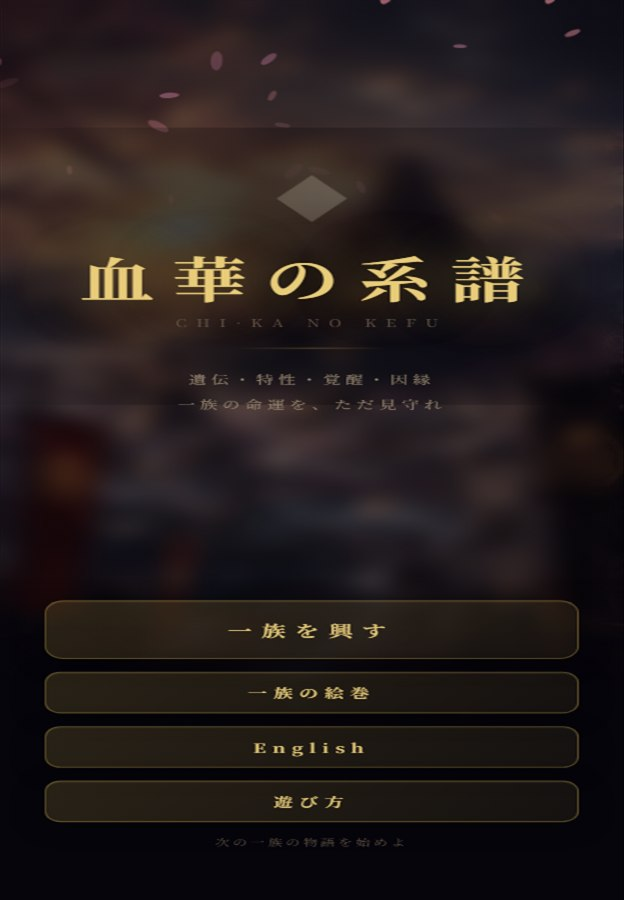
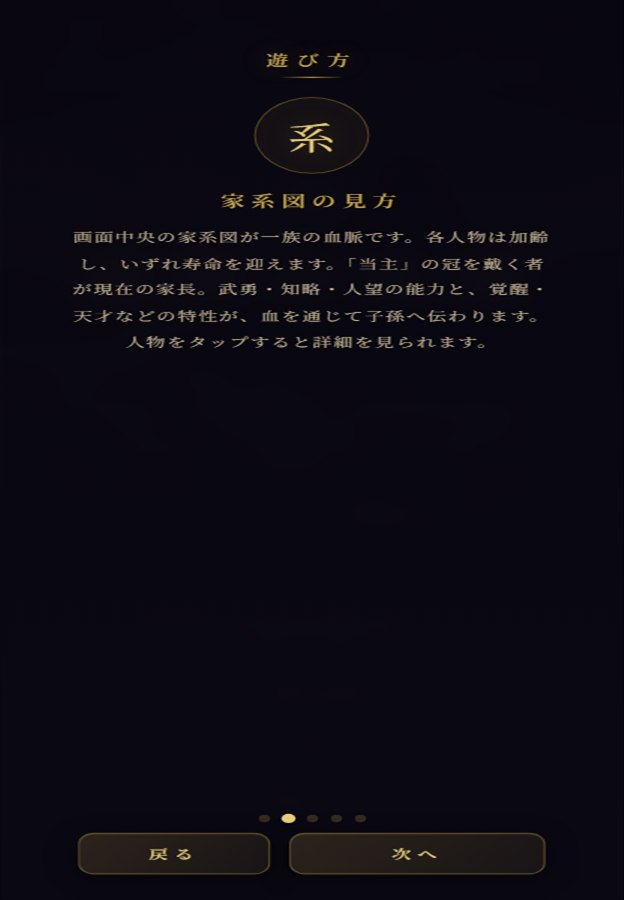

Theme
血統
武将の名、家の記憶、受け継がれる力。プレイヤーは血脈の流れを読みながら、次に進む道を選びます。
Bloodline Game
血は宿命か、選択か。戦国武将の血統、家名、因縁をたどりながら、自分だけの系譜を編んでいくWebゲームです。
Screenshots


Concept
Theme
武将の名、家の記憶、受け継がれる力。プレイヤーは血脈の流れを読みながら、次に進む道を選びます。
Play
物語と成長の分岐をたどり、結果を積み重ねていく構成です。短時間でも進めやすいWebゲームとして公開しています。
World
YouTube楽曲、note制作記録、今後のゲーム作品とつながる、戦国下剋上BEATSの中核作品として育てていきます。
Current Version